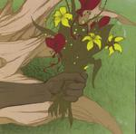

Home Artist links Label link

Svartepan - Nattvandring
| Artist: | Svartepan |
| Title: | Nattvandring |
| Label: | Ant Nest Records ANRCD003 |
| Length(s): | 53 minutes |
| Year(s) of release: | 2004 |
| Month of review: | [05/2005] |
Line up
Conny Andersson - guitar, vocals
Pelle Engvall - drums
Bjorn Holmden - vocals, keys
Christian Norefalk - bass
Tracks
| 1) | Det Var En Man | 4.41
|
| 2) | Min Van | 4.03
|
| 3) | Vill Ha | 3.47
|
| 4) | Balladen Om Lillebror | 4.50
|
| 5) | Gravsang | 2.23
|
| 6) | Starkare | 4.14
|
| 7) | Moss & Manniskor | 5.56
|
| 8) | Dararnas Palats | 8.31
|
| 9) | Sov Gott | 5.14
|
| 10) | Drommar | 9.07
|
Summary
The music
This is Swedes SvartePan's second release, after 2002's Sov Gott. The band makes a heavy oriented sort of bluesrock. The music is akin to the current stoner rock scene, but still refers more directly to seventies icons, Led Zep being the most prominent.
The vocals are doubled up, constantly making for a highly vocal sound. This in combination with the fact that they are more shouted than sung, makes for a very loud vocal style. And in case you didn't gather that from the title: they're in Swedish. At times we get some harmonica thrown in, although only occasional. Most of the times we get the heavy guitars, with dito rhythm. This in the face loudness brings up some similarities with punk too.
The initial three tracks hang heavily on this punkbluesrock style. And just when you think of giving up, Balladen Om Lillebror starts with a more blues directed riff. This makes for a very welcome change, although the double vocals return the memory of the predecessors. The mid section blends in some heavy keys followed by a folky sub ditty. This lightens the weight, albeit briefly and just slightly. Gravsang combines acoustic guitars and tranquil bass with the sort of humming we get from the mellotron. This track fits in much better with seventies prog and is definitely a good one. The double vocals are absent from this track.
Starkare refrains from quoting Black Sabbath's Warpigs, but only just. This near stolen riff, though, is more impressive than the ones the band have come up with all by themselves.
Moss & Manniskor starts with one of those heavy blues riffs too. The vocals take on a more theatrical style, however, no longer so much emphasizing the double sound (although still there).
Conclusion
So, is it the music or am I just getting old? The album is so consistent that the tracks sound more alike than helps. The doubled up vocals don't exactly help, nor does the near continuing onslaught of drums and guitars. The second half of the album is a bit more friendly for the listener, edging more towards blues and less punk, but the impression remains.
Those into stoner rock might still enjoy the album, but for those directed at progressive this will be a bridge too far.
© Roberto Lambooy